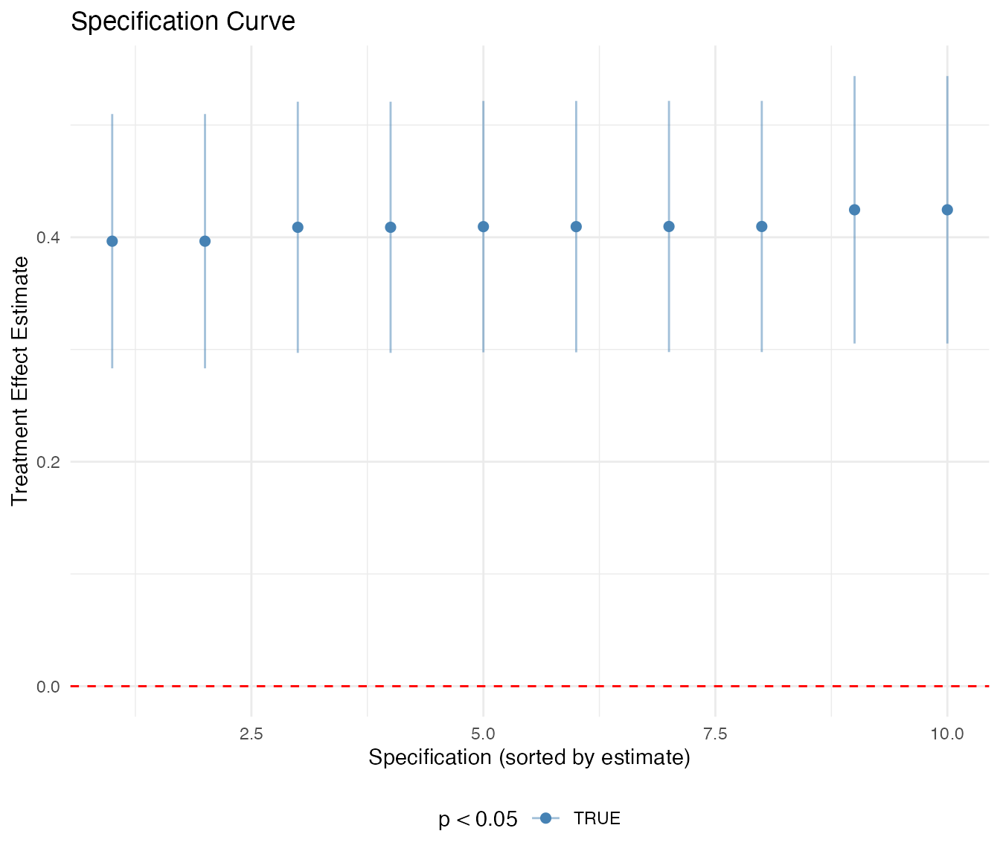
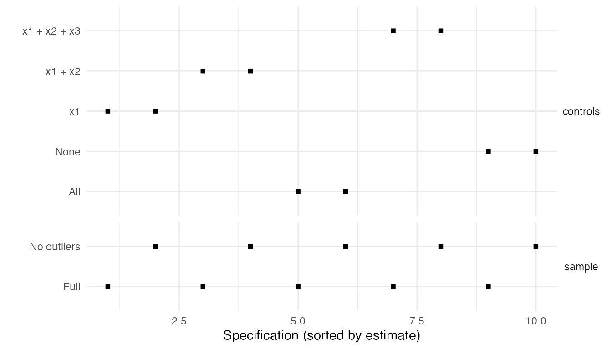
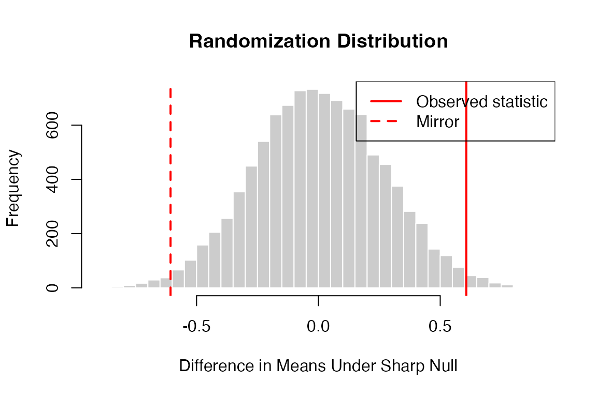

j_sensitivity.RmdCausal inference methods rely on assumptions that are often untestable. Matching requires the conditional independence assumption (no unobserved confounders). Difference-in-differences requires parallel trends. Instrumental variables require the exclusion restriction. Regression discontinuity requires continuity of potential outcomes at the cutoff. Synthetic control requires that a weighted combination of donor units can approximate the treated unit’s counterfactual.
Because these assumptions cannot be verified with observed data alone, sensitivity analysis asks: how robust are our conclusions to plausible violations of the identifying assumptions? A finding that crumbles under even mild violations provides much weaker evidence than one that withstands substantial departures from the ideal.
This vignette covers a comprehensive toolkit of sensitivity and robustness methods:
Throughout, we distinguish between sensitivity analyses (which formally parameterize assumption violations) and robustness checks (which informally probe the fragility of results).
The sensemakr package (Cinelli and Hazlett, 2020) provides a formal framework for assessing sensitivity to omitted variable bias (OVB) in linear regression. The key insight is to express the strength of unobserved confounders in terms of partial R-squared values, which are directly interpretable and can be benchmarked against observed covariates.
Consider a linear model where we regress outcome on treatment and observed controls :
where is an unobserved confounder. The bias of the OLS estimate (from the short regression without ) relative to the true depends on two quantities:
The robustness value (RV) tells us the minimum strength of confounding (in terms of partial R-squared with both treatment and outcome) that would be needed to reduce the estimated effect to zero (or to make it statistically insignificant). A higher RV indicates a more robust finding.
library(sensemakr)
# Simulate analysis data
set.seed(100)
n_sens <- 500
analysis_data <- data.frame(
age = rnorm(n_sens, 40, 10),
income = rnorm(n_sens, 50000, 15000),
education = rnorm(n_sens, 14, 3),
region = factor(sample(1:4, n_sens, replace = TRUE))
)
analysis_data$treatment <- 0.3 * scale(analysis_data$income) +
0.2 * scale(analysis_data$age) + rnorm(n_sens)
analysis_data$treatment <- as.numeric(analysis_data$treatment > median(analysis_data$treatment))
analysis_data$outcome <- 0.5 * analysis_data$treatment +
0.3 * scale(analysis_data$income) +
0.2 * scale(analysis_data$age) +
0.1 * scale(analysis_data$education) + rnorm(n_sens)
# Fit the baseline model
model <- lm(outcome ~ treatment + age + income + education + region,
data = analysis_data)
# Run sensitivity analysis
sens <- sensemakr(
model = model,
treatment = "treatment",
benchmark_covariates = "income",
kd = 1:3, # multiples of the benchmark for treatment equation
ky = 1:3, # multiples of the benchmark for outcome equation
q = 1, # fraction of effect to be explained away (1 = full effect)
alpha = 0.05,
reduce = TRUE
)
# Summary
summary(sens)The summary reports the estimated treatment effect, the robustness value , the robustness value for statistical significance , and benchmark comparisons. If , it means a confounder would need to explain at least 15% of the residual variance of both treatment and outcome to bring the effect to zero.
Contour plots display the adjusted estimate (or t-value) as a function of the hypothetical confounder’s partial R-squared with the treatment and the outcome.
# Contour plot of adjusted estimates
plot(sens, type = "contour")
# Contour plot of adjusted t-statistics
plot(sens, sensitivity.of = "t-value", type = "contour")The contour lines show combinations of confounder strength that produce the same adjusted estimate. The red dashed lines mark the threshold where the adjusted effect equals zero or loses statistical significance. Benchmark points (e.g., how strong the confounder would be if it were “1x income” or “3x income”) provide calibration.
The extreme-scenario plot shows the worst-case bias under the assumption that the confounder explains a given fraction of the treatment variation:
# Extreme scenario plot
plot(sens, type = "extreme")This plot addresses the question: if an unobserved confounder explained fraction of the residual treatment variance, what is the strongest possible confounding it could produce in the outcome equation?
When you have multiple treatment variables, you can run sensemakr for each and compare robustness values:
# Add additional treatment variables to analysis_data
set.seed(101)
analysis_data$treatment_A <- analysis_data$treatment
analysis_data$treatment_B <- as.numeric(
0.2 * scale(analysis_data$income) + rnorm(nrow(analysis_data)) > 0)
analysis_data$treatment_C <- as.numeric(
0.1 * scale(analysis_data$age) + rnorm(nrow(analysis_data)) > 0)
treatments <- c("treatment_A", "treatment_B", "treatment_C")
sens_results <- lapply(treatments, function(trt) {
model <- lm(
reformulate(c(trt, "age", "income", "education"), "outcome"),
data = analysis_data
)
sensemakr(
model = model,
treatment = trt,
benchmark_covariates = "income",
kd = 1:3,
ky = 1:3
)
})
# Compare robustness values
sapply(sens_results, function(s) s$sensitivity_stats$rv_q)Always benchmark against observed covariates. If the strongest observed predictor has partial R-squared of 0.05 with the treatment, and , then the unobserved confounder would need to be four times as strong as the strongest observed predictor.
In matched observational studies, the key assumption is that treatment assignment is ignorable conditional on observed covariates. Rosenbaum bounds formalize how much hidden bias could be present before the conclusion of a significant treatment effect would be overturned.
Let be the probability that unit receives treatment. In a matched pair , the odds ratio of treatment assignment is:
When , there is no hidden bias (treatment assignment depends only on observed covariates). As increases, more hidden bias is allowed. The sensitivity analysis asks: for what value of does the conclusion of a significant treatment effect first break down?
library(rbounds)
library(Matching)
# Simulate data for matching
set.seed(200)
n_rb <- 400
data <- data.frame(
age = rnorm(n_rb, 40, 10),
income = rnorm(n_rb, 50000, 15000),
education = rnorm(n_rb, 14, 3)
)
# Treatment assignment depends on covariates
data$ps <- plogis(-2 + 0.03 * data$age + 0.00002 * data$income + 0.1 * data$education)
data$treatment <- rbinom(n_rb, 1, data$ps)
data$outcome <- 0.5 * data$treatment + 0.02 * data$age +
0.00001 * data$income + rnorm(n_rb)
# Perform matching
match_out <- Match(
Y = data$outcome,
Tr = data$treatment,
X = data[, c("age", "income", "education")],
estimand = "ATT"
)
# Rosenbaum bounds for the Hodges-Lehmann point estimate
hlsens(match_out, Gamma = 3, GammaInc = 0.1)
# Rosenbaum bounds for the Wilcoxon signed-rank test
psens(match_out, Gamma = 3, GammaInc = 0.1)The sensitivitymv package extends Rosenbaum bounds to matched sets with variable numbers of controls:
library(sensitivitymv)
# Create simulated matched-set matrix
# Each row is a matched set; col 1 = treated, cols 2-3 = controls; NA pads shorter sets
set.seed(210)
n_sets <- 50
y_mat <- matrix(NA, nrow = n_sets, ncol = 3)
for (i in 1:n_sets) {
y_mat[i, 1] <- rnorm(1, mean = 0.5) # treated
n_controls <- sample(1:2, 1)
y_mat[i, 2:(1 + n_controls)] <- rnorm(n_controls, mean = 0)
}
senmv(y_mat, gamma = 2, method = "t")
# Sensitivity analysis across a range of Gamma values
gammas <- seq(1, 3, by = 0.1)
pvals <- sapply(gammas, function(g) {
senmv(y_mat, gamma = g, method = "t")$pval
})
# Plot sensitivity
plot(gammas, pvals, type = "l", lwd = 2,
xlab = expression(Gamma), ylab = "Upper bound on p-value",
main = "Sensitivity to Hidden Bias")
abline(h = 0.05, lty = 2, col = "red")The E-value (VanderWeele and Ding, 2017) provides a different perspective on sensitivity to unmeasured confounding. It asks: what is the minimum strength of association (on the risk ratio scale) that an unmeasured confounder would need to have with both the treatment and the outcome to fully explain away the observed treatment-outcome association?
For an observed risk ratio , the E-value is:
The E-value has an appealing interpretation: an unmeasured confounder that could explain away the entire observed effect would need to be associated with both treatment and outcome by a risk ratio of at least the E-value, above and beyond all measured covariates.
library(EValue)
# For a risk ratio
evalues.RR(est = 3.9, lo = 1.8, hi = 8.7)
# For an odds ratio (common outcome)
evalues.OR(est = 2.5, lo = 1.4, hi = 4.5, rare = FALSE)
# For a hazard ratio
evalues.HR(est = 1.8, lo = 1.2, hi = 2.7, rare = TRUE)
# For a standardized mean difference (Cohen's d)
evalues.OLS(est = 0.5, se = 0.1)
# Convert an odds ratio to approximate risk ratio first
# for a common outcome (prevalence > 10%)
or_val <- 2.5
p0 <- 0.3 # baseline prevalence in unexposed
rr_approx <- or_val / (1 - p0 + p0 * or_val)
evalues.RR(est = rr_approx, lo = 1.5, hi = 3.2)
# For a difference in means (continuous outcome)
# Convert to approximate RR using the VanderWeele-Ding method
evalues.OLS(est = 0.35, se = 0.08)The HonestDiD package (Rambachan and Roth, 2023) provides formal sensitivity analysis for difference-in-differences designs, allowing researchers to relax the parallel trends assumption in a disciplined way.
Standard DID assumes that treatment and control groups would have followed identical trends absent treatment. HonestDiD considers two classes of restrictions on how the post-treatment trend could deviate from the pre-treatment trend:
Smoothness restrictions (): The change in the slope of the counterfactual trend between consecutive periods is bounded by . When , this reduces to the standard parallel trends assumption.
Relative magnitudes (): The post-treatment violations of parallel trends are no larger than times the maximum pre-treatment violation.
library(HonestDiD)
library(fixest)
# Simulate panel data for an event-study design
set.seed(300)
n_units_hdid <- 100
n_periods_hdid <- 9
treat_period_hdid <- 5 # treatment starts at period 5
panel_data <- expand.grid(unit = 1:n_units_hdid, period = 1:n_periods_hdid)
panel_data$treated <- as.integer(panel_data$unit <= 50)
panel_data$time_to_treat <- panel_data$period - treat_period_hdid
panel_data$unit_fe <- rep(rnorm(n_units_hdid, 0, 2), each = n_periods_hdid)
panel_data$period_fe <- rep(rnorm(n_periods_hdid), times = n_units_hdid)
# True treatment effect only in post-treatment periods, increasing over time
panel_data$true_effect <- ifelse(
panel_data$treated == 1 & panel_data$time_to_treat >= 0,
0.5 * (1 + panel_data$time_to_treat), 0)
panel_data$outcome <- panel_data$unit_fe + panel_data$period_fe +
panel_data$true_effect + rnorm(nrow(panel_data))
# Estimate event-study specification
es_model <- feols(
outcome ~ i(time_to_treat, treated, ref = -1) |
unit + period,
data = panel_data,
cluster = ~unit
)
# Extract coefficients and variance-covariance matrix
betahat <- coef(es_model)
sigma <- vcov(es_model)
# Identify pre-treatment and post-treatment coefficient indices
# (depends on your specification)
pre_indices <- 1:3 # t = -4, -3, -2 (t = -1 is reference)
post_indices <- 4:7 # t = 0, 1, 2, 3
# Sensitivity analysis with smoothness restrictions
delta_sd_results <- createSensitivityResults(
betahat = betahat,
sigma = sigma,
numPrePeriods = length(pre_indices),
numPostPeriods = length(post_indices),
Mvec = seq(0, 0.05, by = 0.01),
method = "C-LF" # conditional least-favorable
)
# Original CS confidence set (M = 0 corresponds to parallel trends)
print(delta_sd_results)
# Sensitivity analysis with relative magnitudes restrictions
delta_rm_results <- createSensitivityResults_relativeMagnitudes(
betahat = betahat,
sigma = sigma,
numPrePeriods = length(pre_indices),
numPostPeriods = length(post_indices),
Mbarvec = seq(0, 2, by = 0.5),
method = "C-LF"
)
print(delta_rm_results)
# Create sensitivity plot
createSensitivityPlot(delta_sd_results,
rescaleFactor = 1,
SmoothPlot = TRUE)
# For relative magnitudes
createSensitivityPlot_relativeMagnitudes(delta_rm_results,
rescaleFactor = 1)The sensitivity plots show how the confidence set for the treatment effect widens as you allow larger violations of parallel trends. If the confidence interval excludes zero even at moderately large values of or , the result is robust to plausible departures from parallel trends. If the interval includes zero at small violations, the result is fragile.
Placebo tests check whether an estimated effect appears in settings where it should not. A significant placebo effect raises concerns about the validity of the main analysis.
If the treatment is a job training program and the outcome is wages, a good placebo outcome might be height or eye color (which should not be affected).
set.seed(42)
n <- 500
# Simulate data
placebo_data <- data.frame(
treatment = rbinom(n, 1, 0.5),
x1 = rnorm(n),
x2 = rnorm(n)
)
placebo_data$real_outcome <- 0.5 * placebo_data$treatment +
0.3 * placebo_data$x1 + rnorm(n)
placebo_data$placebo_outcome <- 0.2 * placebo_data$x1 +
0.4 * placebo_data$x2 + rnorm(n)
# Real outcome: should detect effect
real_model <- lm(real_outcome ~ treatment + x1 + x2,
data = placebo_data)
# Placebo outcome: should NOT detect effect
placebo_model <- lm(placebo_outcome ~ treatment + x1 + x2,
data = placebo_data)
# Compare
results <- data.frame(
Outcome = c("Real Outcome", "Placebo Outcome"),
Estimate = c(coef(real_model)["treatment"],
coef(placebo_model)["treatment"]),
Std.Error = c(summary(real_model)$coefficients["treatment", "Std. Error"],
summary(placebo_model)$coefficients["treatment", "Std. Error"]),
P.Value = c(summary(real_model)$coefficients["treatment", "Pr(>|t|)"],
summary(placebo_model)$coefficients["treatment", "Pr(>|t|)"])
)
results
#> Outcome Estimate Std.Error P.Value
#> 1 Real Outcome 0.6050214 0.08834775 2.220239e-11
#> 2 Placebo Outcome -0.1349716 0.08984293 1.336544e-01The real outcome shows a significant treatment effect, while the placebo outcome (correctly) does not.
set.seed(123)
n_units <- 50
n_periods <- 10
treat_period <- 6
panel <- expand.grid(unit = 1:n_units, period = 1:n_periods)
panel$treated <- as.integer(panel$unit <= 25)
panel$post <- as.integer(panel$period >= treat_period)
# Unit and period fixed effects
panel$unit_fe <- rep(rnorm(n_units, 0, 2), each = n_periods)
panel$period_fe <- rep(rnorm(n_periods), times = n_units)
# Generate outcome with true effect only in post-treatment period
panel$outcome <- panel$unit_fe + panel$period_fe +
1.5 * panel$treated * panel$post + rnorm(nrow(panel))
# Real DID: using correct treatment period
real_did <- lm(outcome ~ treated * post, data = panel)
# Placebo DID: pretend treatment started at period 3 (use only pre-treatment data)
panel_pre <- panel[panel$period < treat_period, ]
panel_pre$fake_post <- as.integer(panel_pre$period >= 3)
placebo_did <- lm(outcome ~ treated * fake_post, data = panel_pre)
cat("--- Real DID ---\n")
#> --- Real DID ---
cat("Estimate:", round(coef(real_did)["treated:post"], 3),
" p-value:", round(summary(real_did)$coefficients["treated:post", 4], 4), "\n\n")
#> Estimate: -0.375 p-value: 0.3222
cat("--- Placebo DID (fake treatment at period 3) ---\n")
#> --- Placebo DID (fake treatment at period 3) ---
cat("Estimate:", round(coef(placebo_did)["treated:fake_post"], 3),
" p-value:", round(summary(placebo_did)$coefficients["treated:fake_post", 4], 4), "\n")
#> Estimate: 0.304 p-value: 0.5879
set.seed(99)
n <- 1000
rd_data <- data.frame(
running = runif(n, -1, 1)
)
rd_data$treatment <- as.integer(rd_data$running >= 0)
rd_data$outcome <- 0.5 * rd_data$running +
0.8 * rd_data$treatment + rnorm(n, 0, 0.3)
# Real RD at cutoff = 0
real_rd <- lm(outcome ~ running + treatment,
data = rd_data[abs(rd_data$running) < 0.3, ])
# Placebo cutoffs
placebo_cutoffs <- c(-0.5, -0.3, 0.3, 0.5)
placebo_rd_results <- lapply(placebo_cutoffs, function(c0) {
d <- rd_data[abs(rd_data$running - c0) < 0.3, ]
d$fake_treat <- as.integer(d$running >= c0)
d$running_c <- d$running - c0
m <- lm(outcome ~ running_c + fake_treat, data = d)
data.frame(
cutoff = c0,
estimate = coef(m)["fake_treat"],
p_value = summary(m)$coefficients["fake_treat", 4]
)
})
rd_table <- do.call(rbind, placebo_rd_results)
rd_table <- rbind(
data.frame(cutoff = 0,
estimate = coef(real_rd)["treatment"],
p_value = summary(real_rd)$coefficients["treatment", 4]),
rd_table
)
rd_table$significant <- ifelse(rd_table$p_value < 0.05, "***", "")
rd_table
#> cutoff estimate p_value significant
#> treatment 0.0 0.83629722 2.517956e-23 ***
#> fake_treat -0.5 0.05116045 4.578775e-01
#> fake_treat1 -0.3 0.10880620 1.264862e-01
#> fake_treat2 0.3 0.04017363 5.772319e-01
#> fake_treat3 0.5 -0.03659998 5.977710e-01The real cutoff at 0 shows a significant discontinuity, while the placebo cutoffs do not, supporting the validity of the RD design.
library(Synth)
# Simulate panel data for synthetic control
set.seed(400)
n_sc_units <- 8
sc_years <- 2000:2015
treated_unit_id <- 1
sc_panel <- expand.grid(unit_id = 1:n_sc_units, year = sc_years)
sc_panel$x1 <- rnorm(nrow(sc_panel))
sc_panel$x2 <- rnorm(nrow(sc_panel))
# Unit fixed effects
sc_panel$unit_fe <- rep(rnorm(n_sc_units, 0, 2), each = length(sc_years))
# Time trend
sc_panel$time_fe <- rep(seq(0, 1.5, length.out = length(sc_years)), times = n_sc_units)
# Treatment effect for unit 1 after 2009
sc_panel$treat_effect <- ifelse(
sc_panel$unit_id == treated_unit_id & sc_panel$year > 2009,
2.0, 0)
sc_panel$outcome <- sc_panel$unit_fe + sc_panel$time_fe +
0.3 * sc_panel$x1 + 0.2 * sc_panel$x2 +
sc_panel$treat_effect + rnorm(nrow(sc_panel), 0, 0.5)
# For each donor unit, pretend it is the treated unit
# and run the synthetic control method
donor_ids <- setdiff(unique(sc_panel$unit_id), treated_unit_id)
placebo_effects <- lapply(donor_ids, function(pid) {
tryCatch({
dp <- dataprep(
foo = sc_panel,
predictors = c("x1", "x2"),
dependent = "outcome",
unit.variable = "unit_id",
time.variable = "year",
treatment.identifier = pid,
controls.identifier = setdiff(unique(sc_panel$unit_id), pid),
time.predictors.prior = 2000:2009,
time.optimize.ssr = 2000:2009,
time.plot = 2000:2015
)
synth_out <- synth(dp, verbose = FALSE)
gaps <- dp$Y1plot - (dp$Y0plot %*% synth_out$solution.w)
data.frame(unit = pid, year = sc_years, gap = as.numeric(gaps))
}, error = function(e) NULL)
})
placebo_effects <- Filter(Negate(is.null), placebo_effects)
placebo_df <- do.call(rbind, placebo_effects)
# Compute treated unit's gap
dp_treated <- dataprep(
foo = sc_panel,
predictors = c("x1", "x2"),
dependent = "outcome",
unit.variable = "unit_id",
time.variable = "year",
treatment.identifier = treated_unit_id,
controls.identifier = donor_ids,
time.predictors.prior = 2000:2009,
time.optimize.ssr = 2000:2009,
time.plot = 2000:2015
)
synth_treated <- synth(dp_treated, verbose = FALSE)
treated_gaps_df <- data.frame(
year = sc_years,
gap = as.numeric(dp_treated$Y1plot -
(dp_treated$Y0plot %*% synth_treated$solution.w))
)
# Plot: treated unit's gap should stand out from placebo gaps
ggplot(placebo_df, aes(x = year, y = gap, group = unit)) +
geom_line(alpha = 0.3, color = "grey60") +
geom_line(data = treated_gaps_df, aes(x = year, y = gap),
color = "red", linewidth = 1.2) +
geom_vline(xintercept = 2010, linetype = "dashed") +
labs(title = "In-Space Placebo Test",
x = "Year", y = "Gap (Treated - Synthetic)") +
theme_minimal()Specification curve analysis (Simonsohn, Simmons, and Nelson, 2020) addresses the problem of researcher degrees of freedom. Instead of reporting a single specification, the researcher estimates the effect across all (or many) reasonable specifications and reports the distribution of results.
Key dimensions of variation include:
set.seed(2024)
n <- 800
spec_data <- data.frame(
treatment = rbinom(n, 1, 0.5),
x1 = rnorm(n),
x2 = rnorm(n),
x3 = rnorm(n),
x4 = rnorm(n),
group = sample(1:10, n, replace = TRUE)
)
spec_data$outcome <- 0.4 * spec_data$treatment +
0.3 * spec_data$x1 +
0.15 * spec_data$x2 +
rnorm(n, 0, 0.8)
# Define specification space
control_sets <- list(
"None" = "1",
"x1" = "x1",
"x1 + x2" = "x1 + x2",
"x1 + x2 + x3" = "x1 + x2 + x3",
"All" = "x1 + x2 + x3 + x4"
)
sample_defs <- list(
"Full" = rep(TRUE, n),
"No outliers" = abs(spec_data$outcome) < 3
)
# Run all specifications
spec_results <- list()
counter <- 0
for (ctrl_name in names(control_sets)) {
for (samp_name in names(sample_defs)) {
counter <- counter + 1
formula_str <- paste0("outcome ~ treatment + ", control_sets[[ctrl_name]])
d <- spec_data[sample_defs[[samp_name]], ]
m <- lm(as.formula(formula_str), data = d)
spec_results[[counter]] <- data.frame(
spec_id = counter,
controls = ctrl_name,
sample = samp_name,
estimate = coef(m)["treatment"],
se = summary(m)$coefficients["treatment", "Std. Error"],
p_value = summary(m)$coefficients["treatment", "Pr(>|t|)"],
n_obs = nrow(d)
)
}
}
spec_df <- do.call(rbind, spec_results)
spec_df <- spec_df[order(spec_df$estimate), ]
spec_df$rank <- 1:nrow(spec_df)
# Summary statistics
cat("Median estimate:", round(median(spec_df$estimate), 3), "\n")
#> Median estimate: 0.409
cat("Range: [", round(min(spec_df$estimate), 3), ",",
round(max(spec_df$estimate), 3), "]\n")
#> Range: [ 0.397 , 0.424 ]
cat("All significant at 0.05?", all(spec_df$p_value < 0.05), "\n")
#> All significant at 0.05? TRUE
# Upper panel: coefficient estimates sorted
p1 <- ggplot(spec_df, aes(x = rank, y = estimate)) +
geom_point(aes(color = p_value < 0.05), size = 2) +
geom_errorbar(aes(ymin = estimate - 1.96 * se,
ymax = estimate + 1.96 * se,
color = p_value < 0.05),
width = 0, alpha = 0.5) +
geom_hline(yintercept = 0, linetype = "dashed", color = "red") +
scale_color_manual(values = c("TRUE" = "steelblue", "FALSE" = "grey60"),
name = "p < 0.05") +
labs(title = "Specification Curve",
x = "Specification (sorted by estimate)",
y = "Treatment Effect Estimate") +
theme_minimal() +
theme(legend.position = "bottom")
print(p1)
# Lower panel: specification indicators
indicator_df <- spec_df |>
select(rank, controls, sample) |>
pivot_longer(cols = c(controls, sample),
names_to = "dimension", values_to = "choice")
p2 <- ggplot(indicator_df, aes(x = rank, y = choice)) +
geom_point(size = 1.5, shape = 15) +
facet_grid(dimension ~ ., scales = "free_y", space = "free_y") +
labs(x = "Specification (sorted by estimate)", y = "") +
theme_minimal() +
theme(strip.text.y = element_text(angle = 0))
print(p2)
A robust finding will show consistently positive (or negative) estimates across most specifications. If the sign or significance flips depending on reasonable modeling choices, the result is fragile.
When point identification fails (e.g., due to selection or attrition), partial identification provides informative bounds on the parameter of interest.
Lee (2009) bounds address sample selection bias. If treatment affects whether an outcome is observed (e.g., differential attrition), naive estimates are biased. Lee bounds trim the sample to restore comparability and provide sharp bounds under a monotonicity assumption.
The causalverse package provides a lee_bounds() function:
# Simulate experiment data with attrition
set.seed(500)
n_lb <- 1000
experiment_data <- data.frame(
treatment = rbinom(n_lb, 1, 0.5)
)
# Treatment increases both outcome and probability of being observed
experiment_data$attrition_indicator <- rbinom(
n_lb, 1, 0.9 - 0.05 * experiment_data$treatment)
experiment_data$outcome <- 0.5 * experiment_data$treatment + rnorm(n_lb)
# Set outcome to NA for attrited units (lee_bounds expects observed outcomes)
experiment_data$outcome[experiment_data$attrition_indicator == 1] <- NA
# Re-code: m = 1 means selected (observed), 0 means attrited
experiment_data$attrition_indicator <- as.integer(
!is.na(experiment_data$outcome))
# Fill in outcome for all units (lee_bounds handles selection via m)
experiment_data$outcome <- ifelse(
is.na(experiment_data$outcome),
rnorm(sum(is.na(experiment_data$outcome))),
experiment_data$outcome)
# Using causalverse::lee_bounds
bounds <- causalverse::lee_bounds(
df = experiment_data,
d = "treatment",
m = "attrition_indicator",
y = "outcome",
numdraws = 1000
)
print(bounds)
#> term estimate std.error
#> 1 Lower bound 0.07079846 0.2127913
#> 2 Upper bound 1.68081747 0.2545297
set.seed(77)
n <- 2000
lee_data <- data.frame(
treatment = rbinom(n, 1, 0.5)
)
# Treatment increases both outcome and probability of being observed
lee_data$observed <- rbinom(n, 1, 0.85 + 0.05 * lee_data$treatment)
lee_data$outcome <- 0.5 * lee_data$treatment + rnorm(n)
# Observed sample
obs_data <- lee_data[lee_data$observed == 1, ]
# Naive estimate (biased due to differential selection)
naive <- mean(obs_data$outcome[obs_data$treatment == 1]) -
mean(obs_data$outcome[obs_data$treatment == 0])
# Lee bounds: trim the group with higher selection rate
p1 <- mean(lee_data$observed[lee_data$treatment == 1])
p0 <- mean(lee_data$observed[lee_data$treatment == 0])
if (p1 > p0) {
# Trim treated group
trim_frac <- 1 - p0 / p1
y_treated <- sort(obs_data$outcome[obs_data$treatment == 1])
n_treat <- length(y_treated)
n_trim <- floor(n_treat * trim_frac)
# Lower bound: trim from top
lower_trimmed_mean <- mean(y_treated[1:(n_treat - n_trim)])
# Upper bound: trim from bottom
upper_trimmed_mean <- mean(y_treated[(n_trim + 1):n_treat])
y_control_mean <- mean(obs_data$outcome[obs_data$treatment == 0])
lower_bound <- lower_trimmed_mean - y_control_mean
upper_bound <- upper_trimmed_mean - y_control_mean
} else {
# Analogous trimming of control group
trim_frac <- 1 - p1 / p0
y_control <- sort(obs_data$outcome[obs_data$treatment == 0])
n_ctrl <- length(y_control)
n_trim <- floor(n_ctrl * trim_frac)
lower_trimmed_mean <- mean(y_control[(n_trim + 1):n_ctrl])
upper_trimmed_mean <- mean(y_control[1:(n_ctrl - n_trim)])
y_treated_mean <- mean(obs_data$outcome[obs_data$treatment == 1])
lower_bound <- y_treated_mean - upper_trimmed_mean
upper_bound <- y_treated_mean - lower_trimmed_mean
}
cat("Observation rates: Treated =", round(p1, 3),
" Control =", round(p0, 3), "\n")
#> Observation rates: Treated = 0.893 Control = 0.861
cat("Naive estimate: ", round(naive, 3), "\n")
#> Naive estimate: 0.45
cat("Lee bounds: [", round(lower_bound, 3), ",",
round(upper_bound, 3), "]\n")
#> Lee bounds: [ 0.373 , 0.522 ]
cat("True effect: 0.5\n")
#> True effect: 0.5Manski (1990) worst-case bounds make no assumptions about the selection process. If the outcome is bounded in , then for the missing outcomes we substitute the extreme values:
# Using the same lee_data from above
# Suppose outcome is bounded in [-4, 4]
y_lower <- -4
y_upper <- 4
n1 <- sum(lee_data$treatment == 1)
n0 <- sum(lee_data$treatment == 0)
# For treated: observed outcomes + worst case for missing
y1_obs <- lee_data$outcome[lee_data$treatment == 1 & lee_data$observed == 1]
n1_miss <- sum(lee_data$treatment == 1 & lee_data$observed == 0)
# For control
y0_obs <- lee_data$outcome[lee_data$treatment == 0 & lee_data$observed == 0]
y0_obs_real <- lee_data$outcome[lee_data$treatment == 0 & lee_data$observed == 1]
n0_miss <- sum(lee_data$treatment == 0 & lee_data$observed == 0)
# Lower bound: treated missing get y_lower, control missing get y_upper
manski_lower <- (sum(y1_obs) + n1_miss * y_lower) / n1 -
(sum(y0_obs_real) + n0_miss * y_upper) / n0
# Upper bound: treated missing get y_upper, control missing get y_lower
manski_upper <- (sum(y1_obs) + n1_miss * y_upper) / n1 -
(sum(y0_obs_real) + n0_miss * y_lower) / n0
cat("Manski bounds: [", round(manski_lower, 3), ",",
round(manski_upper, 3), "]\n")
#> Manski bounds: [ -0.581 , 1.386 ]
cat("Lee bounds: [", round(lower_bound, 3), ",",
round(upper_bound, 3), "]\n")
#> Lee bounds: [ 0.373 , 0.522 ]Manski bounds are always wider than Lee bounds because they make weaker assumptions. The trade-off between assumptions and informativeness is fundamental to partial identification.
When testing multiple hypotheses simultaneously (e.g., treatment effects on several outcomes, subgroup analyses), the probability of at least one false positive increases rapidly. Multiple testing corrections control the overall error rate.
The FWER is the probability of making at least one Type I error across all tests.
# Simulate 20 hypothesis tests
set.seed(314)
n_tests <- 20
# 5 tests have true effects, 15 are null
true_effects <- c(rep(0.5, 5), rep(0, 15))
p_values <- sapply(true_effects, function(effect) {
x <- rnorm(100, mean = effect)
t.test(x)$p.value
})
# Bonferroni correction (most conservative)
p_bonferroni <- p.adjust(p_values, method = "bonferroni")
# Holm step-down procedure (uniformly more powerful than Bonferroni)
p_holm <- p.adjust(p_values, method = "holm")
# Compare
comparison <- data.frame(
Test = 1:n_tests,
True_Effect = true_effects,
Raw_p = round(p_values, 4),
Bonferroni = round(p_bonferroni, 4),
Holm = round(p_holm, 4),
Raw_sig = ifelse(p_values < 0.05, "*", ""),
Bonf_sig = ifelse(p_bonferroni < 0.05, "*", ""),
Holm_sig = ifelse(p_holm < 0.05, "*", "")
)
# Show results for first 10 tests
head(comparison, 10)
#> Test True_Effect Raw_p Bonferroni Holm Raw_sig Bonf_sig Holm_sig
#> 1 1 0.5 0.0000 0.0001 0.0001 * * *
#> 2 2 0.5 0.0000 0.0000 0.0000 * * *
#> 3 3 0.5 0.0013 0.0260 0.0208 * * *
#> 4 4 0.5 0.0000 0.0005 0.0004 * * *
#> 5 5 0.5 0.0000 0.0001 0.0001 * * *
#> 6 6 0.0 0.2380 1.0000 1.0000
#> 7 7 0.0 0.1953 1.0000 1.0000
#> 8 8 0.0 0.6303 1.0000 1.0000
#> 9 9 0.0 0.2964 1.0000 1.0000
#> 10 10 0.0 0.9237 1.0000 1.0000
cat("\nRejections at alpha = 0.05:\n")
#>
#> Rejections at alpha = 0.05:
cat(" Raw: ", sum(p_values < 0.05), "\n")
#> Raw: 6
cat(" Bonferroni: ", sum(p_bonferroni < 0.05), "\n")
#> Bonferroni: 5
cat(" Holm: ", sum(p_holm < 0.05), "\n")
#> Holm: 5The FDR controls the expected proportion of false positives among all rejections, which is a less stringent criterion than FWER.
# Benjamini-Hochberg procedure
p_bh <- p.adjust(p_values, method = "BH")
# Benjamini-Yekutieli (valid under arbitrary dependence)
p_by <- p.adjust(p_values, method = "BY")
fdr_comparison <- data.frame(
Test = 1:n_tests,
True_Effect = true_effects,
Raw_p = round(p_values, 4),
BH_adj = round(p_bh, 4),
BY_adj = round(p_by, 4)
)
cat("Rejections at alpha = 0.05:\n")
#> Rejections at alpha = 0.05:
cat(" Benjamini-Hochberg: ", sum(p_bh < 0.05), "\n")
#> Benjamini-Hochberg: 6
cat(" Benjamini-Yekutieli:", sum(p_by < 0.05), "\n")
#> Benjamini-Yekutieli: 5The Romano-Wolf procedure controls the FWER while accounting for the dependence structure among test statistics through resampling:
library(wildrwolf)
library(fixest)
# Simulate multi-outcome data with clusters
set.seed(600)
n_rw <- 500
n_groups_rw <- 25
multi_outcome_data <- data.frame(
group = rep(1:n_groups_rw, each = n_rw / n_groups_rw),
treatment = rep(rbinom(n_groups_rw, 1, 0.5), each = n_rw / n_groups_rw)
)
multi_outcome_data$outcome1 <- 0.5 * multi_outcome_data$treatment + rnorm(n_rw)
multi_outcome_data$outcome2 <- 0.3 * multi_outcome_data$treatment + rnorm(n_rw)
multi_outcome_data$outcome3 <- 0.0 * multi_outcome_data$treatment + rnorm(n_rw)
multi_outcome_data$outcome4 <- 0.4 * multi_outcome_data$treatment + rnorm(n_rw)
# Estimate multiple models
models <- feols(
c(outcome1, outcome2, outcome3, outcome4) ~ treatment | group,
data = multi_outcome_data,
cluster = ~group
)
# Romano-Wolf adjusted p-values
rw_pvals <- rwolf(
models = models,
param = "treatment",
B = 999,
seed = 42
)
print(rw_pvals)| Method | Controls | Assumption | Power |
|---|---|---|---|
| Bonferroni | FWER | None | Lowest |
| Holm | FWER | None | Higher than Bonferroni |
| Romano-Wolf | FWER | Resampling valid | Higher (accounts for dependence) |
| Benjamini-Hochberg | FDR | Independence or PRDS | High |
| Benjamini-Yekutieli | FDR | None | Moderate |
Rule of thumb: Use Holm for FWER control. Use Benjamini-Hochberg when FDR control suffices and tests are approximately independent. Use Romano-Wolf when test statistics are correlated and FWER control is needed.
Randomization inference (RI) derives exact p-values by comparing the observed test statistic to its distribution under all possible random assignments, without relying on asymptotic approximations.
Under the sharp null hypothesis for all , the potential outcomes are fixed and only the treatment assignment is random. The p-value is:
where is the test statistic computed under permutation .
set.seed(555)
n <- 60
ri_data <- data.frame(
treatment = c(rep(1, 30), rep(0, 30)),
outcome = c(rnorm(30, mean = 0.6), rnorm(30, mean = 0))
)
# Observed test statistic
obs_stat <- mean(ri_data$outcome[ri_data$treatment == 1]) -
mean(ri_data$outcome[ri_data$treatment == 0])
# Permutation distribution (10000 draws)
n_perms <- 10000
perm_stats <- numeric(n_perms)
for (i in 1:n_perms) {
perm_treat <- sample(ri_data$treatment)
perm_stats[i] <- mean(ri_data$outcome[perm_treat == 1]) -
mean(ri_data$outcome[perm_treat == 0])
}
# Two-sided p-value
ri_pvalue <- mean(abs(perm_stats) >= abs(obs_stat))
cat("Observed difference in means:", round(obs_stat, 3), "\n")
#> Observed difference in means: 0.607
cat("Randomization inference p-value:", ri_pvalue, "\n")
#> Randomization inference p-value: 0.0202
cat("Conventional t-test p-value:",
round(t.test(outcome ~ treatment, data = ri_data)$p.value, 4), "\n")
#> Conventional t-test p-value: 0.0188
# Visualization
hist(perm_stats, breaks = 50, col = "grey80", border = "white",
main = "Randomization Distribution",
xlab = "Difference in Means Under Sharp Null")
abline(v = obs_stat, col = "red", lwd = 2)
abline(v = -obs_stat, col = "red", lwd = 2, lty = 2)
legend("topright", legend = c("Observed statistic", "Mirror"),
col = "red", lty = c(1, 2), lwd = 2)
The ri2 package provides a convenient interface:
library(ri2)
# Simulate data for ri2
set.seed(700)
n_ri2 <- 60
ri2_data <- data.frame(
treatment = c(rep(1, 30), rep(0, 30)),
outcome = c(rnorm(30, mean = 0.6), rnorm(30, mean = 0))
)
# Declare the randomization scheme
declaration <- declare_ra(N = nrow(ri2_data), m = sum(ri2_data$treatment))
# Conduct randomization inference
ri_out <- conduct_ri(
formula = outcome ~ treatment,
declaration = declaration,
sharp_hypothesis = 0,
data = ri2_data,
sims = 5000
)
summary(ri_out)
plot(ri_out)
library(ri2)
# Simulate cluster-randomized data
set.seed(710)
n_clust_ri <- 30
clust_size_ri <- 10
cluster_ri_data <- data.frame(
cluster_id = rep(1:n_clust_ri, each = clust_size_ri),
treatment = rep(c(rep(1, 15), rep(0, 15)), each = clust_size_ri)
)
cluster_ri_data$outcome <- 0.4 * cluster_ri_data$treatment +
rep(rnorm(n_clust_ri, 0, 0.5), each = clust_size_ri) +
rnorm(n_clust_ri * clust_size_ri)
# Cluster-randomized design
declaration <- declare_ra(
clusters = cluster_ri_data$cluster_id,
m_each = c(15, 15) # 15 treated clusters, 15 control clusters
)
ri_cluster <- conduct_ri(
formula = outcome ~ treatment,
declaration = declaration,
sharp_hypothesis = 0,
data = cluster_ri_data,
sims = 5000
)
summary(ri_cluster)The standard nonparametric bootstrap resamples observations with replacement to approximate the sampling distribution:
set.seed(101)
n <- 200
boot_data <- data.frame(
treatment = rbinom(n, 1, 0.5),
x1 = rnorm(n)
)
boot_data$outcome <- 0.5 * boot_data$treatment +
0.3 * boot_data$x1 + rnorm(n)
# Point estimate
model_orig <- lm(outcome ~ treatment + x1, data = boot_data)
theta_hat <- coef(model_orig)["treatment"]
# Bootstrap
B <- 2000
boot_estimates <- numeric(B)
for (b in 1:B) {
idx <- sample(1:n, n, replace = TRUE)
boot_model <- lm(outcome ~ treatment + x1, data = boot_data[idx, ])
boot_estimates[b] <- coef(boot_model)["treatment"]
}
# Bootstrap confidence intervals
# Percentile method
ci_percentile <- quantile(boot_estimates, c(0.025, 0.975))
# Normal approximation
boot_se <- sd(boot_estimates)
ci_normal <- theta_hat + c(-1.96, 1.96) * boot_se
# BCa (bias-corrected and accelerated) approximation
z0 <- qnorm(mean(boot_estimates < theta_hat))
# Jackknife for acceleration
jack_estimates <- numeric(n)
for (i in 1:n) {
jack_model <- lm(outcome ~ treatment + x1, data = boot_data[-i, ])
jack_estimates[i] <- coef(jack_model)["treatment"]
}
jack_mean <- mean(jack_estimates)
a_hat <- sum((jack_mean - jack_estimates)^3) /
(6 * sum((jack_mean - jack_estimates)^2)^1.5)
alpha1 <- pnorm(z0 + (z0 + qnorm(0.025)) / (1 - a_hat * (z0 + qnorm(0.025))))
alpha2 <- pnorm(z0 + (z0 + qnorm(0.975)) / (1 - a_hat * (z0 + qnorm(0.975))))
ci_bca <- quantile(boot_estimates, c(alpha1, alpha2))
cat("Point estimate: ", round(theta_hat, 3), "\n")
#> Point estimate: 0.522
cat("Analytical SE: ", round(summary(model_orig)$coefficients["treatment", 2], 3), "\n")
#> Analytical SE: 0.144
cat("Bootstrap SE: ", round(boot_se, 3), "\n")
#> Bootstrap SE: 0.147
cat("Percentile CI: [", round(ci_percentile[1], 3), ",",
round(ci_percentile[2], 3), "]\n")
#> Percentile CI: [ 0.247 , 0.816 ]
cat("Normal CI: [", round(ci_normal[1], 3), ",",
round(ci_normal[2], 3), "]\n")
#> Normal CI: [ 0.233 , 0.811 ]
cat("BCa CI: [", round(ci_bca[1], 3), ",",
round(ci_bca[2], 3), "]\n")
#> BCa CI: [ 0.254 , 0.824 ]With clustered data and few clusters, cluster-robust standard errors can be severely biased. The pairs cluster bootstrap resamples entire clusters:
set.seed(202)
n_clusters <- 30
cluster_size <- 20
cluster_data <- data.frame(
cluster = rep(1:n_clusters, each = cluster_size),
treatment = rep(rbinom(n_clusters, 1, 0.5), each = cluster_size)
)
cluster_data$cluster_effect <- rep(rnorm(n_clusters, 0, 1),
each = cluster_size)
cluster_data$outcome <- 0.4 * cluster_data$treatment +
cluster_data$cluster_effect +
rnorm(n_clusters * cluster_size, 0, 0.5)
# Original estimate
orig_model <- lm(outcome ~ treatment, data = cluster_data)
theta_orig <- coef(orig_model)["treatment"]
# Pairs cluster bootstrap
B <- 2000
boot_cluster_est <- numeric(B)
for (b in 1:B) {
sampled_clusters <- sample(1:n_clusters, n_clusters, replace = TRUE)
boot_df <- do.call(rbind, lapply(seq_along(sampled_clusters), function(j) {
d <- cluster_data[cluster_data$cluster == sampled_clusters[j], ]
d$cluster <- j # re-label to avoid duplicate cluster IDs
d
}))
boot_model <- lm(outcome ~ treatment, data = boot_df)
boot_cluster_est[b] <- coef(boot_model)["treatment"]
}
boot_cluster_se <- sd(boot_cluster_est)
ci_cluster <- quantile(boot_cluster_est, c(0.025, 0.975))
cat("Point estimate: ", round(theta_orig, 3), "\n")
#> Point estimate: -0.24
cat("Pairs cluster bootstrap SE:", round(boot_cluster_se, 3), "\n")
#> Pairs cluster bootstrap SE: 0.396
cat("95% CI: [", round(ci_cluster[1], 3), ",",
round(ci_cluster[2], 3), "]\n")
#> 95% CI: [ -1.042 , 0.521 ]The wild cluster bootstrap (Cameron, Gelbach, and Miller, 2008) is particularly useful when the number of clusters is small (fewer than 50). The fwildclusterboot package provides a fast implementation:
library(fwildclusterboot)
library(fixest)
# Simulate panel data for wild cluster bootstrap
set.seed(800)
n_wc_clusters <- 30
n_wc_per <- 20
wcb_data <- data.frame(
cluster_id = rep(1:n_wc_clusters, each = n_wc_per),
treatment = rep(rbinom(n_wc_clusters, 1, 0.5), each = n_wc_per),
x1 = rnorm(n_wc_clusters * n_wc_per),
x2 = rnorm(n_wc_clusters * n_wc_per)
)
wcb_data$cluster_effect <- rep(rnorm(n_wc_clusters, 0, 1), each = n_wc_per)
wcb_data$outcome <- 0.5 * wcb_data$treatment + 0.3 * wcb_data$x1 +
0.2 * wcb_data$x2 + wcb_data$cluster_effect +
rnorm(n_wc_clusters * n_wc_per, 0, 0.5)
wcb_data$state <- wcb_data$cluster_id # alias for the few-clusters chunk
# Estimate model with fixest
model <- feols(outcome ~ treatment + x1 + x2 | cluster_id,
data = wcb_data,
cluster = ~cluster_id)
# Wild cluster bootstrap
boot_result <- boottest(
model,
param = "treatment",
clustid = ~cluster_id,
B = 9999,
type = "rademacher", # or "mammen", "webb", "norm"
impose_null = TRUE # impose null for better finite-sample properties
)
summary(boot_result)
plot(boot_result)When the number of clusters is very small (G < 20), the Webb (2023) six-point distribution often outperforms Rademacher weights:
# For designs with very few clusters
boot_few <- boottest(
model,
param = "treatment",
clustid = ~state,
B = 99999,
type = "webb", # better for few clusters
impose_null = TRUE,
p_val_type = "equal-tailed"
)
summary(boot_few)| Scenario | Recommended Method |
|---|---|
| iid data | Nonparametric (pairs) bootstrap |
| Clustered, G >= 50 | Cluster-robust SEs are usually fine |
| Clustered, 20 <= G < 50 | Wild cluster bootstrap (Rademacher) |
| Clustered, G < 20 | Wild cluster bootstrap (Webb weights) |
| Heteroskedasticity | Wild bootstrap (HC) |
| Panel data with FE | Wild cluster bootstrap with fixest |
The KonFound-It framework (Frank, 2000; Frank et al., 2013) quantifies how much of an estimated effect would need to be biased to invalidate a statistical inference. It provides two complementary metrics:
The konfound package offers konfound() for fitted model objects and pkonfound() for published results (when you only have the estimate, standard error, sample size, and number of covariates).
library(konfound)
# Simulate data with a treatment effect
set.seed(42)
n <- 500
x1 <- rnorm(n)
x2 <- rnorm(n)
treatment <- 0.4 * x1 + 0.3 * x2 + rnorm(n)
outcome <- 0.5 * treatment + 0.3 * x1 + 0.2 * x2 + rnorm(n)
df_konfound <- data.frame(outcome, treatment, x1, x2)
model_konfound <- lm(outcome ~ treatment + x1 + x2, data = df_konfound)
summary(model_konfound)
# Apply KonFound-It to the fitted model
# How much bias is needed to invalidate the treatment effect?
konfound(model_konfound, treatment)
# For published results: estimate, SE, sample size, number of covariates
# Example: coefficient = 0.5, SE = 0.06, n = 500, 3 covariates
pkonfound(est_eff = 0.5, std_err = 0.06, n_obs = 500, n_covariates = 3)
# Impact Threshold for a Confounding Variable (ITCV)
# What correlations with treatment and outcome would an omitted variable need?
pkonfound(est_eff = 0.5, std_err = 0.06, n_obs = 500, n_covariates = 3,
index = "IT")Interpretation: If PBII is high (e.g., >50%), the result is robust—more than half of the effect would need to be due to bias. A low ITCV means even a weakly correlated confounder could overturn the finding, while a high ITCV indicates robustness. Researchers can compare the ITCV to correlations of observed covariates as informal benchmarks.
The treatSens package (Carnegie, Harada, & Hill, 2016) provides sensitivity analysis for causal effects estimated from observational studies with binary or continuous treatments. Unlike methods that assume selection on observables, treatSens directly models how an unobserved confounder related to both treatment assignment and outcomes could bias estimates, building on the framework of Imbens (2003) and Carnegie, Harada, & Hill (2015).
The key idea is to posit a hypothetical unobserved confounder and examine how the treatment effect estimate changes across a grid of possible relationships between and the treatment (sensitivity parameter ) and between and the outcome (sensitivity parameter ).
library(treatSens)
# Simulate observational data with continuous treatment
set.seed(42)
n <- 400
U <- rnorm(n) # unobserved confounder
x1 <- rnorm(n)
x2 <- rnorm(n)
# Treatment depends on observed and unobserved confounders
treatment <- 0.5 * x1 + 0.3 * x2 + 0.6 * U + rnorm(n)
# Outcome depends on treatment, covariates, and unobserved confounder
outcome <- 0.4 * treatment + 0.3 * x1 + 0.2 * x2 + 0.5 * U + rnorm(n)
df_tsens <- data.frame(outcome, treatment, x1, x2)
# Sensitivity analysis for continuous treatment
# Grid explores how an unmeasured confounder could change the estimate
sens_result <- treatSens(outcome ~ treatment + x1 + x2,
trt.family = gaussian,
nsim = 20,
grid.dim = c(5, 5),
data = df_tsens)
# Contour plot: shows how the treatment effect varies over
# (zeta, eta) = (confounder-treatment, confounder-outcome) associations
sensPlot(sens_result)Interpretation: The contour plot shows estimated treatment effects across combinations of confounder–treatment () and confounder–outcome () associations. The origin (0, 0) corresponds to the naive estimate. If the zero-effect contour is far from plausible confounder strengths (benchmarked against observed covariates), the finding is robust to unobserved confounding.
The tipr package (McGowan & Greevy, 2022, JOSS) provides an intuitive tipping-point framework: given an observed effect, what characteristics would an unmeasured confounder need to have to “tip” the estimate to the null (or any other threshold)? Rather than computing a single sensitivity parameter, tipr returns the confounder prevalence and effect size combinations that would change the conclusion.
The package provides tipping-point functions for different effect scales:
tip_coef(): for regression coefficients (mean differences)tip_rr(): for risk ratiostip_or(): for odds ratiosadjust_coef(): adjust an estimate for a hypothetical confounder with specified properties
library(tipr)
# Simulate data and fit a model
set.seed(42)
n <- 500
x1 <- rnorm(n)
treatment <- rbinom(n, 1, plogis(0.3 * x1))
outcome <- 0.8 * treatment + 0.5 * x1 + rnorm(n)
df_tipr <- data.frame(outcome, treatment, x1)
model_tipr <- lm(outcome ~ treatment + x1, data = df_tipr)
est <- coef(model_tipr)["treatment"]
se_est <- summary(model_tipr)$coefficients["treatment", "Std. Error"]
cat("Estimated treatment effect:", round(est, 3),
" (95% CI:", round(est - 1.96 * se_est, 3), ",",
round(est + 1.96 * se_est, 3), ")\n")
# What unmeasured confounder would tip the coefficient to zero?
tip_result <- tip_coef(effect = est, se = se_est)
tip_result
# Adjust the estimate for a hypothetical confounder:
# e.g., a binary confounder with 30% prevalence in treated, 10% in control,
# and an effect of 0.5 on the outcome
adjusted <- adjust_coef(
effect = est,
se = se_est,
exposure_confounder_effect = 0.20,
confounder_outcome_effect = 0.5
)
adjustedInterpretation: tip_coef() returns combinations of confounder–exposure and confounder–outcome effects that would reduce the estimated coefficient to the null. If these required confounder characteristics are implausibly large compared to observed covariates, the result is robust. adjust_coef() lets researchers ask “what if” questions about specific hypothetical confounders, making sensitivity discussions concrete and accessible for applied audiences.
The OVtool package extends the TWANG framework for propensity score weighting by providing omitted variable sensitivity analysis. It asks: if an unobserved covariate were added to the propensity score model, how would the treatment effect estimate and covariate balance change? This is particularly relevant for studies using inverse probability weighting (IPW) or related methods, where balance on observed covariates does not guarantee balance on unobserved ones.
library(OVtool)
library(twang)
# Simulate data for propensity score analysis
set.seed(42)
n <- 600
x1 <- rnorm(n)
x2 <- rnorm(n)
x3 <- rbinom(n, 1, 0.5)
treatment <- rbinom(n, 1, plogis(0.5 * x1 + 0.3 * x2 + 0.4 * x3))
outcome <- 2.0 * treatment + 0.8 * x1 + 0.5 * x2 + 0.3 * x3 + rnorm(n)
df_ov <- data.frame(outcome, treatment, x1, x2, x3)
# Fit propensity score model with TWANG
ps_model <- ps(treatment ~ x1 + x2 + x3,
data = df_ov,
n.trees = 2000,
interaction.depth = 2,
stop.method = "es.mean",
verbose = FALSE)
# Simulate an omitted confounder and assess sensitivity
# The function simulates a confounder U correlated with treatment and outcome
ov_result <- ov_sim(
model_results = ps_model,
outcome_model = lm(outcome ~ treatment, data = df_ov, weights = get.weights(ps_model)),
data = df_ov,
treatment = "treatment",
outcome = "outcome",
sim_covariates = c("x1", "x2"),
es_grid = seq(0, 0.5, by = 0.1),
rho_grid = seq(0, 0.5, by = 0.1),
n_reps = 50
)
# Visualize sensitivity
plot(ov_result)Interpretation: The plot shows how the treatment effect estimate changes as the simulated omitted variable becomes more strongly related to treatment assignment and outcome. The approach uses observed covariates as benchmarks, making it easy to judge whether a plausible confounder could meaningfully shift the estimate. If the effect remains significant across the range of simulated confounders calibrated to observed covariate strengths, the weighting-based estimate is robust.
The causalsens package provides sensitivity analysis for causal estimates by allowing researchers to specify a confounding function that describes how unobserved selection bias enters the model. This is particularly useful for treatment effects estimated via matching, regression, or IPW, where the functional form of confounding can be directly parameterized.
The key function causalsens() takes a fitted treatment effect model and a confounding function, then recalculates the treatment effect across a range of confounding strengths.
library(causalsens)
# Simulate observational data
set.seed(42)
n <- 500
x1 <- rnorm(n)
x2 <- rnorm(n)
treatment <- rbinom(n, 1, plogis(0.6 * x1 + 0.3 * x2))
outcome <- 1.0 * treatment + 0.5 * x1 + 0.3 * x2 + rnorm(n)
df_csens <- data.frame(outcome, treatment, x1, x2)
# Fit outcome model and propensity score model
outcome_model <- lm(outcome ~ treatment + x1 + x2, data = df_csens)
ps_model_csens <- glm(treatment ~ x1 + x2, data = df_csens, family = binomial)
# Run sensitivity analysis with one-sided confounding
# alpha controls confounding strength; the function explores a range
sens_out <- causalsens(model = outcome_model,
confound = one.sided,
data = df_csens,
alpha = seq(-0.5, 0.5, by = 0.1))
# Plot: how does the ATE change across confounding strengths?
plot(sens_out, type = "raw", bty = "l")
# Alignment-based confounding: bias is proportional to propensity score
sens_aligned <- causalsens(model = outcome_model,
confound = alignment,
data = df_csens,
alpha = seq(-0.5, 0.5, by = 0.1))
plot(sens_aligned, type = "raw", bty = "l")Interpretation: Each curve shows the estimated treatment effect at a different level of confounding strength (). When , the estimate equals the original (no confounding). Positive indicates confounding that inflates the effect; negative indicates confounding that attenuates it. The one.sided function models confounding that affects only the treated group, while alignment models confounding proportional to the propensity score. If the effect remains positive (or significant) across a wide range of , the causal conclusion is robust to selection on unobservables.
Before estimation: choose your primary specification. Commit to a primary specification before looking at results to avoid specification searching. Pre-registration helps.
After estimation: probe robustness. Use the tools covered in this vignette to assess whether your conclusions are fragile or robust.
| Causal Method | Primary Sensitivity Analysis | Additional Checks |
|---|---|---|
| OLS / Selection on observables | sensemakr (OVB), E-values | Specification curve, coefficient stability |
| Matching / Propensity score | Rosenbaum bounds, E-values | Balance checks, different matching algorithms |
| Difference-in-differences | HonestDiD, placebo tests | Pre-trend tests, varying pre/post windows |
| Synthetic control | In-space placebos, leave-one-out | Pre-treatment MSPE ratios |
| Regression discontinuity | Placebo cutoffs, bandwidth sensitivity | Density tests, donut-hole RD |
| Instrumental variables | Effective F-statistic, tF procedure | Reduced form, plausibly exogenous (Conley bounds) |
| RCT with attrition | Lee bounds, Manski bounds | Multiple imputation, bounding exercises |
Following best practices, sensitivity analyses should be reported transparently:
State assumptions explicitly. Write down the identifying assumptions in formal terms.
Report robustness values. For OVB analysis, report the and along with benchmark comparisons.
Show placebo tests. Report placebo test results even (especially) when they are null.
Present specification curves. Show the distribution of estimates across reasonable specifications.
Discuss the sensitivity frontier. At what point do assumptions need to be violated for the result to break down? Is that violation plausible?
Account for multiple testing. When reporting multiple outcomes or subgroups, apply appropriate corrections and report both adjusted and unadjusted p-values.
Use confidence intervals, not just p-values. Sensitivity analyses that report how bounds or intervals change under assumption violations are more informative than binary significance results.
For any empirical causal study, consider including at minimum:
Cameron, A. C., Gelbach, J. B., and Miller, D. L. (2008). Bootstrap-based improvements for inference with clustered errors. Review of Economics and Statistics, 90(3), 414-427.
Cinelli, C., and Hazlett, C. (2020). Making sense of sensitivity: Extending omitted variable bias. Journal of the Royal Statistical Society: Series B, 82(1), 39-67.
Conley, T. G., Hansen, C. B., and Rossi, P. E. (2012). Plausibly exogenous. Review of Economics and Statistics, 94(1), 260-272.
Imbens, G. W., and Manski, C. F. (2004). Confidence intervals for partially identified parameters. Econometrica, 72(6), 1845-1857.
Lee, D. S. (2009). Training, wages, and sample selection: Estimating sharp bounds on treatment effects. Review of Economic Studies, 76(3), 1071-1102.
Manski, C. F. (1990). Nonparametric bounds on treatment effects. American Economic Review, 80(2), 319-323.
Rambachan, A., and Roth, J. (2023). A more credible approach to parallel trends. Review of Economic Studies, 90(5), 2555-2591.
Romano, J. P., and Wolf, M. (2005). Stepwise multiple testing as formalized data snooping. Econometrica, 73(4), 1237-1282.
Rosenbaum, P. R. (2002). Observational Studies (2nd ed.). Springer.
Simonsohn, U., Simmons, J. P., and Nelson, L. D. (2020). Specification curve analysis. Nature Human Behaviour, 4(11), 1208-1214.
VanderWeele, T. J., and Ding, P. (2017). Sensitivity analysis in observational research: Introducing the E-value. Annals of Internal Medicine, 167(4), 268-274.
Webb, M. D. (2023). Reworking wild bootstrap-based inference for clustered errors. Canadian Journal of Economics, 56(3), 839-858.